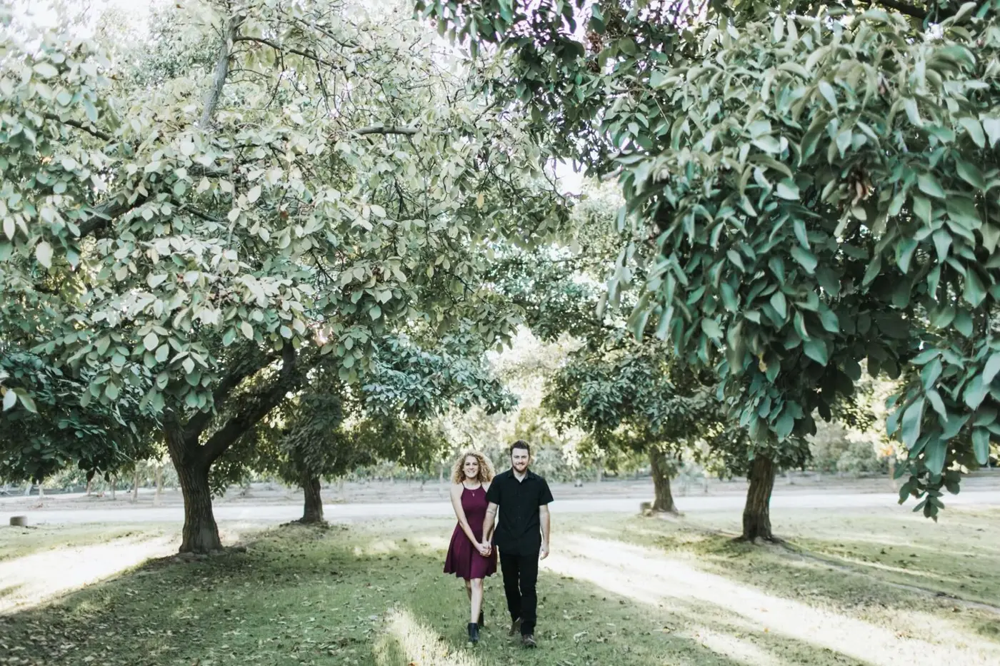

We're nuts about walnuts.
The Esajian family grows walnuts, sweet corn, ancient grains, and herbs and spices in the Central Valley, with clean minerals and good soil instead of poisons and chemicals.
Farming the Central Valley since 1920Grown with love in Hanford, California
Walnuts
Our main crop. Shelled halves and pieces by the 25 pound case, for baking, snacking and sharing.
Harvest: September and OctoberOrder walnutsSweet Corn
Picked at its sweetest and sold fresh from the farm while the season lasts.
Season: summerWhere to find itAncient Grains
Khorasan wheat, also known as Kamut, sold as whole grain for milling, cooking and baking.
Available while supplies lastSee grainsHerbs & Spices
Small batches of culinary herbs and spices grown alongside our other crops.
Ask what's ready this weekAsk the farmFrom our orchard to your kitchen
Tell us what you need
Send an order request for walnuts or grains, or give us a call. Every order starts with a conversation.
We confirm the details
We'll check what's in season, confirm your price, and set a pickup time or a delivery day.
Pick up or we deliver
Come by the farm stand, find us at the market, or get free local delivery on Central California orders over $250.
Our faith in Christ and our passion for clean, wholesome food
Faith
It's our foundation.
Ephesians 2:8-9Integrity
We're only as good as our word.
Proverbs 10:9Work Hard
We're farmers. It's what we do.
Proverbs 12:11Deliver Quality
Excellence is our tradition.
Colossians 3:23-24Celebrating our heritage with wholesome Mediterranean flavors
Go Teshuva. The inputs we use on our own ground.
Teshuva Ag makes the soil and water products behind our regenerative program, right here in Hanford.
Be the first to know when the walnuts are ready.
Harvest news, sweet corn days, farm stand hours and new family recipes. A few emails a year, never more.
How we grow
Esajian Family Farms is a regenerative organic farm in Hanford, California, growing walnuts, sweet corn, ancient grains, and herbs and spices.
Above and beyond organic
We are transitioning to certified organic, but don't be fooled. That is strictly a marketing decision. Our farming practices go above and beyond those requirements, and we've been farming this way since 2020.
We never use poisons, chemicals, pesticides, herbicides or fungicides. Instead, we use only the cleanest minerals and organic materials, and we use methods that detox our soil and crops from heavy metals and toxins.
Complete transparency. Come see what we're doing. Call ahead and we'll walk you through the orchard.
The walnut orchard in Hanford.
What you get with every case
Never GMO
Every seed and tree is non-GMO, always.
Poison free
No pesticides, herbicides or fungicides, ever.
Nutrition dense
Mineral-rich soil grows food with more in it.
Healthy
Clean food for your family, grown by ours.
All natural
Nothing added, nothing taken out.
Regenerative
We build the soil every season instead of using it up.
Organic
Certification is in progress, two of three years complete.
Uncompromised
We grow it the right way even when it costs more.
Complete transparency
Come see what we're doing. The gate is open.
Rooted in Hanford for nearly a century
The Esajian family escaped the Armenian Genocide, crossed an ocean, and planted walnut trees in the Central Valley. Four generations later, we're still farming.
Family roots
The Esajian family escaped genocide in Turkey in 1915, arriving in New York and eventually settling in Kingsburg, California in 1917. We've been farming in the Central Valley since 1920.
Nshan Esajian brought a centuries-old Armenian farming tradition with him. He settled in Hanford with his wife and newborn child and planted his first walnut grove, the start of the orchard we still farm today.
Our faith in Christ and our passion for clean, wholesome food drive everything we do.
Sarah and Eddie in the orchard.
The family escapes genocide in Turkey and arrives in New York.
The family settles in Kingsburg, California.
The Esajians begin farming in the Central Valley.
Nishan plants his first walnut grove in Hanford.
Nishan marries in a traditional Armenian ceremony in Fresno.
The farm goes fully regenerative. No poisons, no chemicals.
Edward
Ed II
Eddie III
Eddie IV
Four principles we farm by
Faith
It's our foundation.
Ephesians 2:8-9Integrity
We're only as good as our word.
Proverbs 10:9Work Hard
We're farmers. It's what we do.
Proverbs 12:11Deliver Quality
Excellence is our tradition.
Colossians 3:23-24Order from the farm
Pick what you'd like and send a request. We'll call or email to confirm availability, your total, and pickup or delivery.
Walnuts, Shelled Halves & Pieces
$185 per 25 lb caseLight, buttery and fresh from this season's harvest. Buy in bulk for baking, or split a case with friends. In-shell walnuts available on request.
Khorasan Wheat (Kamut), Whole Grain
$175 per orderAn ancient wheat with a rich, nutty flavor. Mill it for bread and pasta or cook it whole like rice.
Sweet Corn
In season, summerPicked fresh and sold by the dozen while it lasts. Join the list and we'll tell you the day it's ready.
Come say hello
As a family farm, we love to meet our customers face to face. Stop by and try some of our walnuts. We'd love to meet you!
The Yellow Farm Stand
Walnuts, sweet corn in season, and whatever else is ready that week.
- Where
- Hanford, CA
- Hours
- Set by season
Farmers markets
Look for our booth for fresh walnuts and a taste of what's in season.
Local delivery
Free delivery in Central California on orders over $250. Smaller orders can be picked up at the farm stand.
Start an orderFrom our kitchen to yours
Looking for something new to make? Try some of these old Esajian family recipes, built around what we grow.
Talk to the farm
Questions about an order, a farm visit, or what's in season? We answer our own phone.
- Phone
- (559) 816-7281
- info@esajianfamilyfarms.com
- PO Box 285
Hanford, CA 93232 - Hours
- Monday to Friday, 9am to 5pm
Saturday, 9am to 2pm
Sunday, closed
Looking for soil and water inputs? Teshuva Ag has its own site.